世界地図の基準で作った世界を、ローポリで描く(11-20)
概要: mapstyle35は乱数のまま作ったため、陸が少ない世界が混ざりました。これはハブの基準(参考の世界地図=陸が4〜6割・大陸は3つほど・地図の端は海)に合っていませんでした。今回は、その基準に合うよう生成の設定を決めて、3つの生成器で各5個作りました。描き方はmapstyle32と同じ(世界ごとの調整なし)。
Azgaar(型 大陸・地中海、細かさ2万点指定)
az1(陸43%・端0%)
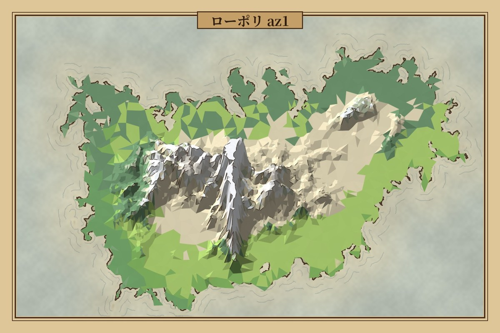
絵番号 E134az2(陸42%・端0%)
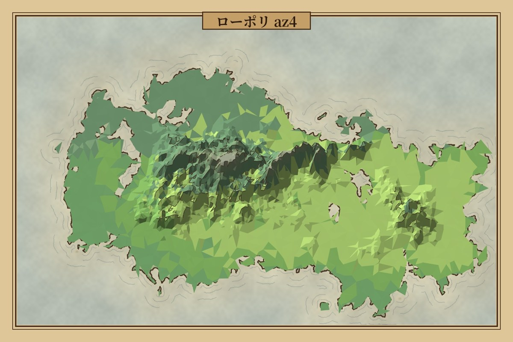
絵番号 E135az3(陸44%・端0%)
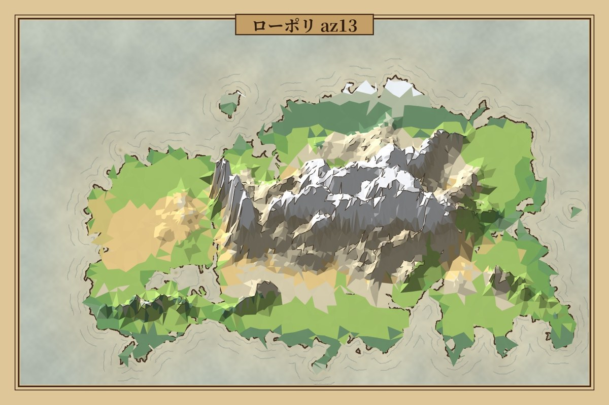
絵番号 E136az4(陸49%・端0%)
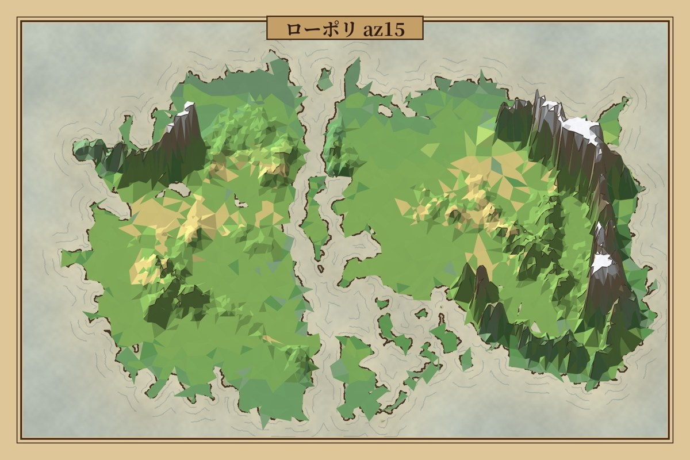
絵番号 E137az5(陸47%・端0%)
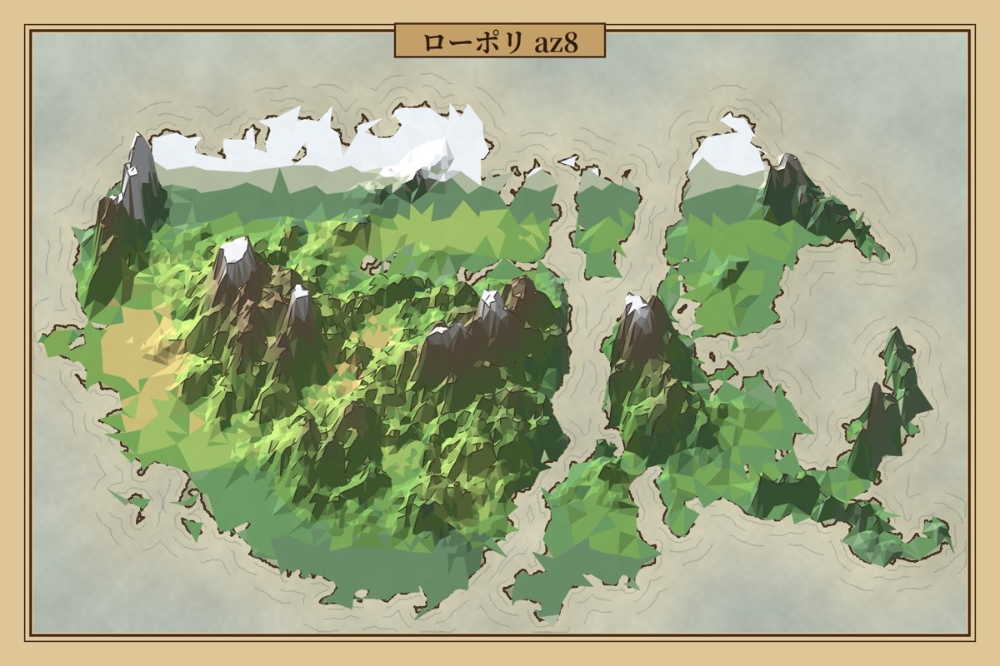
絵番号 E138PWG(陸の割合0.65〜0.75・大陸3つ・端は海を指定)
pwg1(陸45%・端の陸27%)
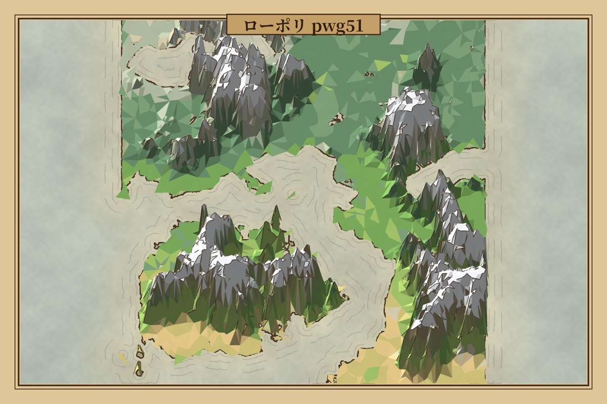
絵番号 E139pwg2(陸44%・端18%)
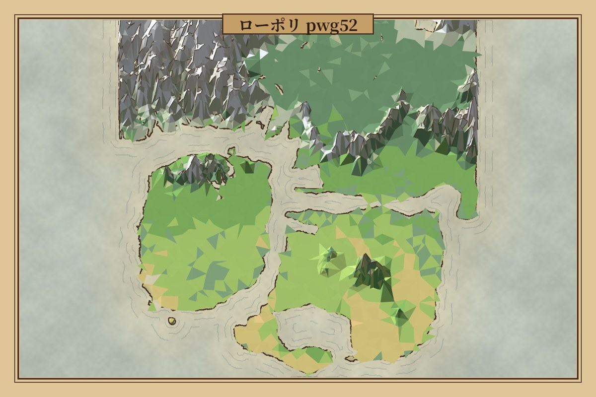
絵番号 E140pwg3(陸48%・端28%)
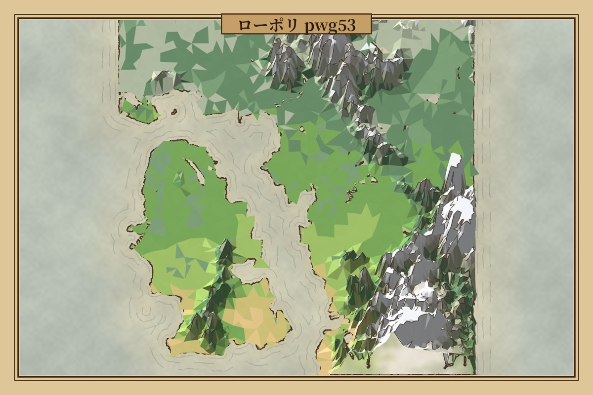
絵番号 E141pwg4(陸45%・端23%)
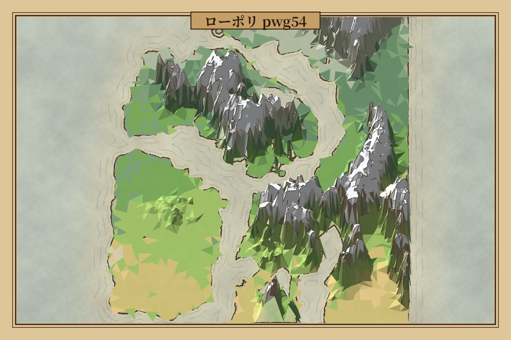
絵番号 E142pwg5(陸42%・端12%)
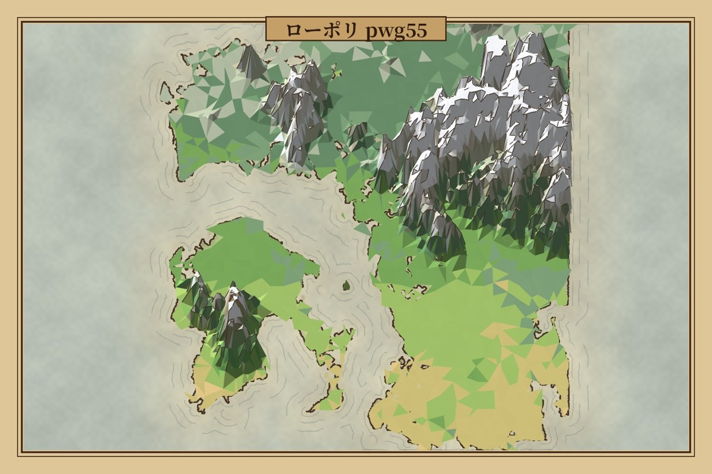
絵番号 E143自作の簡易生成(陸の割合0.5)
own1(陸50%・端0%)
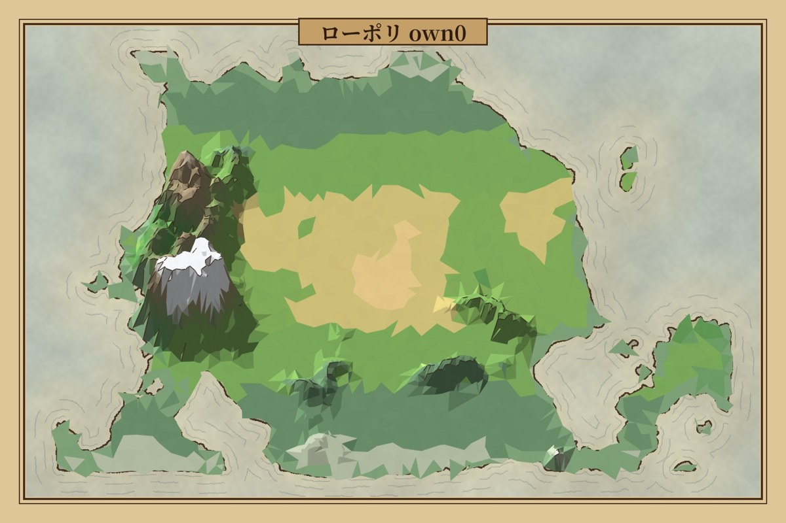
絵番号 E144own2(陸50%・端0%)
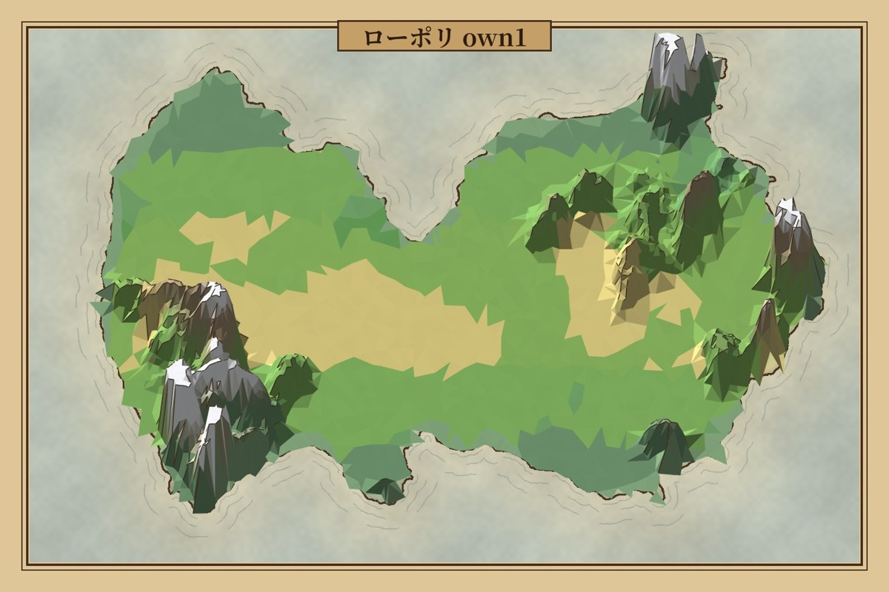
絵番号 E145own3(陸50%・端0%)
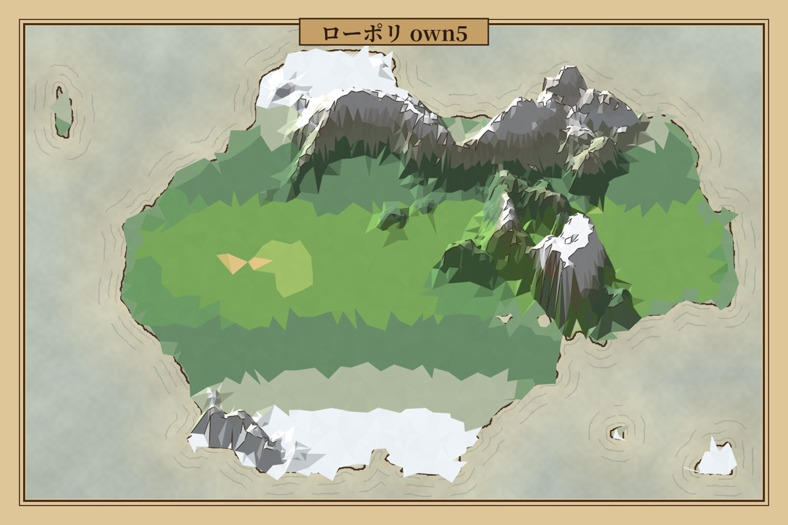
絵番号 E146own4(陸50%・端0%)
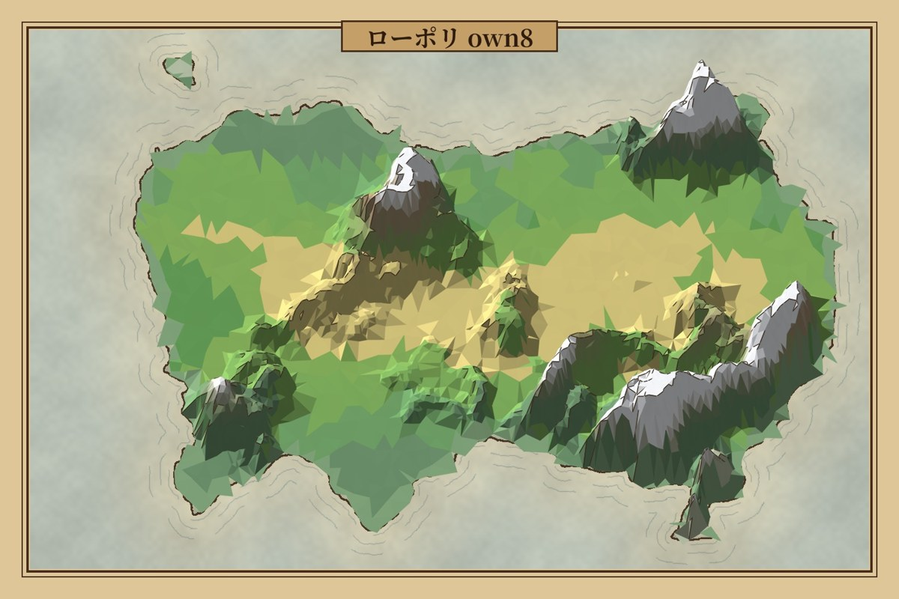
絵番号 E147own5(陸50%・端0%)
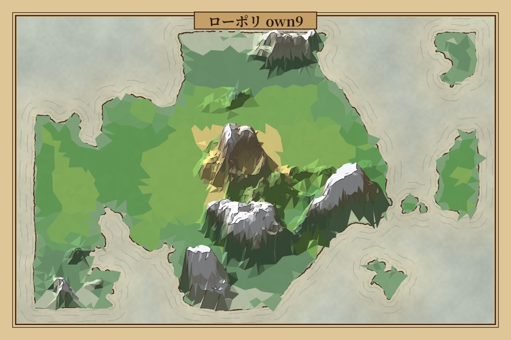
絵番号 E148
基準に合ったか(実測)
- Azgaar・自作: 各5個とも、陸が4〜6割で端は海。基準を満たした。
- PWG: 陸の割合は4〜5割に届いたが、端に陸がかかった(12〜28%)。図の左右が直線で切れた世界がそれ。PWGは陸を増やすと端に陸が出やすく、ハブの以前の記録(端の陸は保証されない)と一致した。端が海の世界(陸26〜35%)も手元にあるが、陸が基準に足りない。両立は未達。
目で見た評価(各1枚)
- Azgaar: 山脈が中央に立ち、周りに草地と砂色の帯が広がる。世界地図らしい形で、一番まとまりが良い。
- PWG: 山は一番尖って山らしいが、直線で切れた端が不自然。低地は大きな面で単調。
- 自作: 形が丸い大陸で単純。山は少なく、砂と草の帯が三角のぎざぎざで単調。
限界・未確認
- 各1枚・目視のみ。iPhoneでの見え方は未測定。
- 世界の選び方: Azgaarは10余個から基準に合う5個を選んだ(基準での選別であり、見た目での選別ではない)。
- 世界データはGoogleドライブに保存(ハブには置かない)。
次: PWGで「陸4〜5割かつ端は海」を満たす設定を探す。